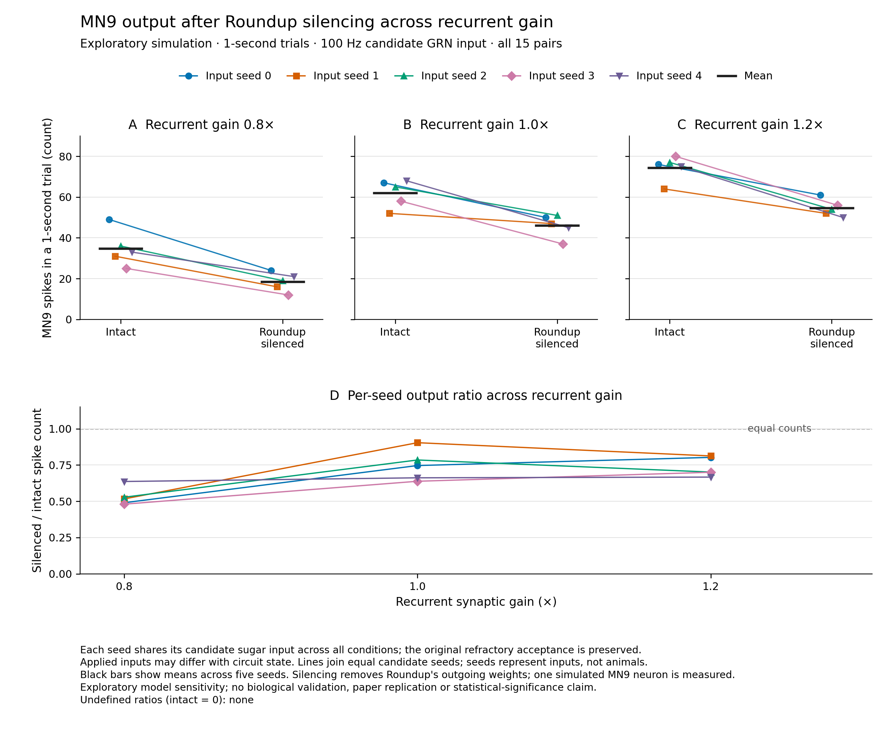
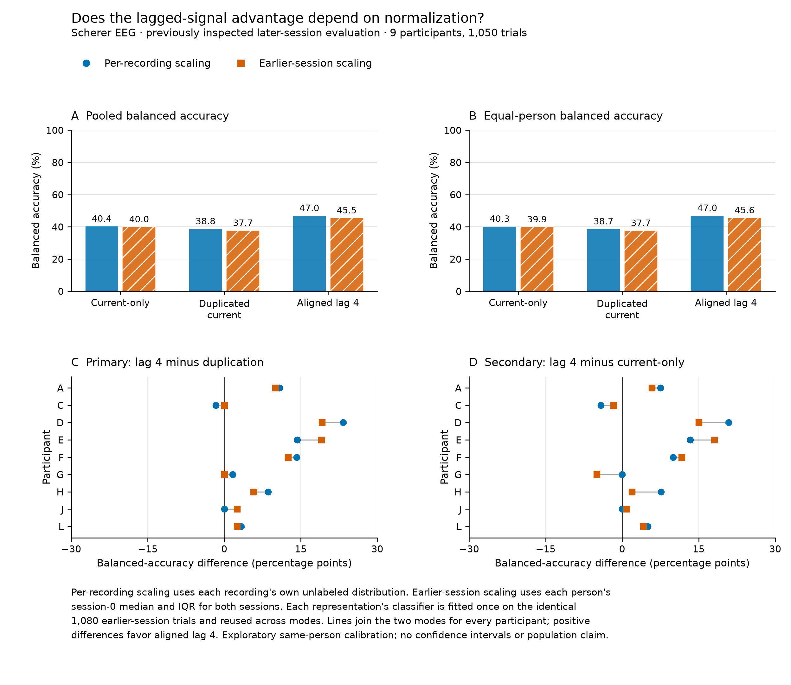
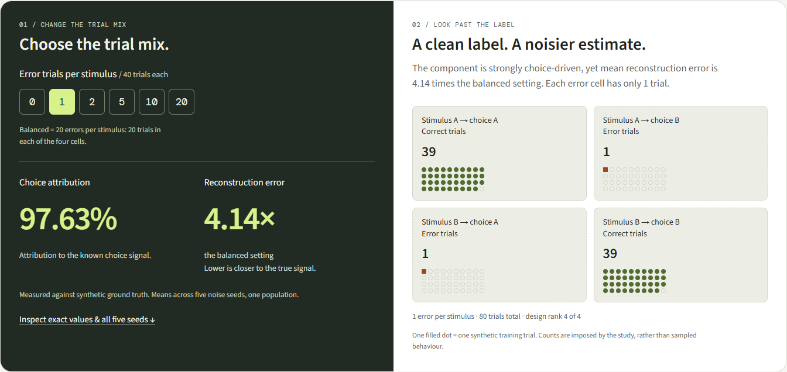

UCL
Undergraduate Research Assistant
I work under Professor Lorenzo Fabrizi in UCL’s Medawar Pain and Somatosensory Labs. My supervised work focuses on EEG source modelling: relating models of brain activity to signals measured at the scalp.
UCL · Neuroscience undergraduate
I’m Jason, a UCL neuroscience undergraduate interested in computational neuroscience and machine learning. My recent projects ask which predictions survive changes in a model or its analysis: from a fly feeding circuit to EEG decoding across recording sessions.
Interested in research placements. Request my CV


Same saved run · signal fields → regional identities.
Illustrative model; parameters are not calibrated to biological measurements.
Play or scrub a recording of the Python prototype.
Geometric morphing; this does not track anatomy or model biological development.
Trainer camera sequence · 6.5-second demo excerpt
 Editor screenshot · open full size ↗
Editor screenshot · open full size ↗

Watch the result. Inspect the editor behind it.
Working prototype · saved projects and MP4 export demonstrated. Full release remains in development.
Computational neuroscience
UCL
I work under Professor Lorenzo Fabrizi in UCL’s Medawar Pain and Somatosensory Labs. My supervised work focuses on EEG source modelling: relating models of brain activity to signals measured at the scalp.
Connectome modelling · October 2026
I proposed and directed a study asking whether disconnecting one feeding-circuit neuron still reduces simulated motor-neuron output when recurrent connection strength changes.
In a 127,400-neuron implementation of a published fly model, setting Roundup’s outgoing weights to zero reduced MN9 spiking in all 15 paired comparisons: three connection strengths and five input seeds.
Exploratory model sensitivity: one circuit intervention, output neuron and input regime, at three selected gains. These simulated spikes do not establish a change in real feeding behaviour.
All 30 scientific runs passed independent saved-output verification. Each trial lasted one simulated second. Intact and disconnected conditions shared exogenous input candidates; refractory acceptance could still differ with circuit state. Both this shared-candidate design and an execution correction were post-failure amendments, not preregistered.
Five input seeds are not five animals. No statistical significance, biological validation, novelty or full replication of the source paper is claimed. The source paper documents left-right inversion of the dataset and uses corrected biological sides. Genetic-driver coverage and historical cell-ID lineage remain unverified.
Shiu et al. (2024), source paper · Pinned source model
Download aggregate results (CSV) · Evidence and source hashes (JSON)

EEG decoding · October 2026
I proposed and directed a study testing whether time-lagged EEG features retain their advantage when normalization uses only an earlier recording session.
The lagged representation retained a 7.81 percentage-point advantage in pooled balanced accuracy over a dimension-matched duplication control on 1,050 later-session trials: positive in seven participants and tied in two.
Nine participants; evaluation recordings had already been inspected. This is an exploratory comparison, not evidence of performance on new people or an untouched test set.
Exact raw-data replay covered all nine participants and both sessions. Each representation’s classifier was fitted once on 1,080 earlier-session trials and kept fixed while normalization changed. Duplicating current signals controls feature dimension without adding time-lagged information.
Balanced accuracy averages recall across the three selected classes. With earlier-session normalization, pooled scores were 45.52% for lag-4 and 37.71% for duplicated current signals; the difference was 7.94 points when participants received equal weight.
Independent saved-output verification passed after a disclosed verifier-metadata correction; no model was refitted. This comparison does not isolate a neural mechanism, establish online performance or qualify a competition submission.
Scherer et al. (2015), source dataset study · BNCI2015-004, selected numeric classes 1, 2 and 4.
Download aggregate results (CSV) · Evidence and source hashes (JSON)

Supporting methods study · dPCA
dPCA separates variation in population activity associated with stimulus, choice and time, helping ask what a pattern represents. This study tests that interpretation with synthetic data whose factors are known—not my own brain recordings or evidence of causality.
Six saved trial mixes · five noise seeds
Explore the study
Change the trial mix. Inspect the result.Selected personal projects
What each project explores.
What you can try.
01 / Interactive model
What happens when you change the signals?
Try the modelInteractive demo · JavaScript & WebGL
Move or remove SHH and BMP sources, then see how the model’s dorsal, intermediate and ventral regions change.
Illustrative model. Parameters are not calibrated to biological measurements.
To reproduce the demo example, leave both source strengths at 1× and remove BMP bilateral region 1 (either outermost handle). Keep all six SHH source pairs. Run the condition and compare the converged endpoints: dorsal identity changes from 48.8% to 45.6%, intermediate from 12.5% to 15.7%, and ventral stays at 38.7%. In this run, 3.2% of model tissue changes identity. These are model outputs, not measured biological effects.
The solver starts both fields at zero and stops when each field’s relative update is at most 10−4 and the decoded identity holds for five consecutive qualifying steps. A 1,000-iteration cap rejects unsettled runs. Solver iterations represent numerical relaxation, not developmental time.
The biological context includes Jessell (2000) and Zagorski et al. (2017); these support the qualitative mechanism, not the chosen decoder parameters. The independent atlas view uses CC0 population-average GW21–36 surfaces from the dHCP fetal surface atlas. The atlas is a separate data reference, not a response to the molecular intervention. Further numerical details are available in the demo’s evidence panel.
Synthetic parameter recovery: a separate 1D study examined which measurements distinguish diffusion from clearance. After source shutoff with zero-flux boundaries, the total-amount time course constrains clearance but contains no diffusion information. In the noiseless seven-reading comparison, one spatial arrangement left roughly as many plausible parameter pairs as a local trace; reversing the arrangement was much less informative. Recovery benefits from knowing the generating model, source and calibration. This is a within-model result, not biological validation or a re-analysis of experimental assays.
This separate 1D experiment compares total amount, a local trace and spatial observations. It does not calibrate the public 2D demo.
02 / Supporting software · Geometry
Morphing without matching vertices.
Explore the sourceTwo 3D surfaces. No matching vertices. This prototype blends their distance fields, then extracts the shape in between.
The transition is geometric; it does not track corresponding anatomy or model biological development.
Mesh repair → SDF sampling → interpolation → isosurface extraction. CPU and conditional PyTorch/CUDA paths. Surface quality depends on mesh repair and resolution; memory use grows cubically with grid resolution.
The recording uses Allen Mouse CCF meshes from BrainGlobe, including a dentate-gyrus-to-whole-brain transition. Image/data credit: Allen Institute. Noncommercial research demonstration. Sources and licence details.
Trainer camera sequence · 6.5-second demo excerpt
Editor screenshot · open full size ↗
Arrange a scene, set camera keyframes and preview the result on a timeline. Export the animation directly from the browser.
Working prototype with local project saving and H.264 export. Full release remains in development.
The demo shows camera movement and captions around one model. It is a compressed excerpt of a 1080p export; it does not show mesh morphing.
The gallery separates the product render, editor screenshot and exported sequence. The editor uses React and three.js, with GPU and CPU fallback paths.
View a full Free export · 9 seconds (720p, including the end card).
Let’s connect
I’m interested in research placements in computational neuroscience and machine learning.
jason.wang.25@ucl.ac.uk